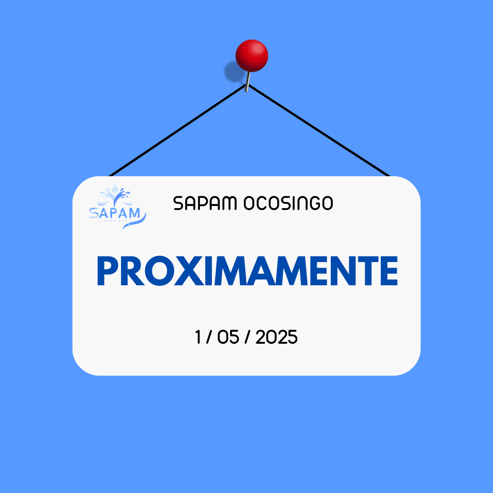

PROPORCIONANDO AGUA POTABLE DE CALIDAD PARA OCOSINGO
EN "SAPAM", GARANTIZAMOS EL ACCESO A UN SERIVICIO EFICIENTE Y CONFIABLE PARA TODOS LOS CIUDADANOS.
CONOCE NUESTROS FORMULARIOS


Comunicados
ㅤㅤㅤㅤㅤㅤㅤㅤㅤㅤㅤㅤㅤㅤㅤㅤㅤㅤㅤㅤㅤㅤㅤㅤㅤㅤㅤㅤㅤㅤㅤㅤㅤㅤㅤㅤㅤㅤㅤㅤㅤㅤㅤㅤㅤ✅ RESTABLECIDO EL SERVICIO EN LOMA BONITA, AMP. AEREOPUERTO TRAS REPARACIÓN DE 180 METROS DE TUBERÍA
EL SISTEMA DE AGUA POTABLE Y ALCANTARILLADO DE OCOSINGO (SAPAM) INFORMA LA REPARACIÓN DE UN TRAMO DE 180 METROS DE TUBERÍA DE 3 ½ PULGADAS ENTRE TIENDA BELÉN. ESTA OBRA PERMITIÓ RESTABLECER EL SUMINISTRO DE AGUA EN LOS BARRIOS LOMA BONITA, AMP. AEROPUERTO, BENEFICIANDO A CIENTOS DE FAMILIAS QUE HABÍAN SIDO AFECTADAS POR UNA FALLA EN LA LÍNEA DE DISTRIBUCIÓN.

🚰 CONSTRUCCIÓN DE BY-PASS EN EL “TANQUE DEL MILLÓN” MEJORA PRESIÓN Y FLUJO DEL AGUA
SAPAM INICIÓ LA CONSTRUCCIÓN DE UN PUENTE DE LÍNEA (BY-PASS) EN EL ÁREA DEL TANQUE DEL MILLÓN. ESTE PROYECTO ESTRATÉGICO BUSCA MEJORAR LA PRESIÓN Y EL FLUJO DEL AGUA EN TODA LA RED DE DISTRIBUCIÓN, GARANTIZANDO UN SERVICIO MÁS EFICIENTE Y CONFIABLE PARA LOS HABITANTES DE OCOSINGO.

💧 MANTENIMIENTO PREVENTIVO DE MANANTIAL BENEFICIA A ROSARIO, POMOLA Y VISULJA
CON EL OBJETIVO DE ASEGURAR LA CALIDAD Y CONTINUIDAD DEL SERVICIO, SE LLEVÓ A CABO EL MANTENIMIENTO DEL MANANTIAL QUE ABASTECE A LOS BARRIOS ROSARIO, POMOLA Y VISULJA. LAS LABORES INCLUYERON LIMPIEZA Y VERIFICACIÓN DEL SISTEMA, LO QUE AYUDARÁ A PREVENIR CONTAMINACIONES Y ASEGURAR UN SUMINISTRO ESTABLE.

🔧 SUSTITUCIÓN DE VÁLVULAS DE 6” MEJORA LA RED EN LA ZONA NORTE
ESAPAM REALIZÓ EL CAMBIO DE VÁLVULAS DE 6 PULGADAS DESDE LA TÉCNICA HASTA EL BOULEVARD DEL BARRIO LINDA VISTA. ESTA ACCIÓN BUSCA OPTIMIZAR EL CONTROL Y DISTRIBUCIÓN DEL AGUA EN ESA ZONA, REDUCIENDO PÉRDIDAS Y MEJORANDO EL SERVICIO PARA CIENTOS DE FAMILIAS.

💦 FUGA REPARADA EN BARRIO LINDA VISTA RESTITUYE EL SERVICIO A 10 HOGARES
UNA FUGA EN LA CALLE PRINCIPAL DEL BARRIO LINDA VISTA FUE ATENDIDA DE MANERA INMEDIATA. GRACIAS A LA RÁPIDA INTERVENCIÓN DEL EQUIPO TÉCNICO DE SAPAM, SE RESTABLECIÓ EL SUMINISTRO DE AGUA POTABLE A 10 VIVIENDAS QUE SE ENCONTRABAN SIN SERVICIO.

🛠️ REPARACIÓN DE LÍNEA DE 8” REFUERZA ALMACENAMIENTO EN LINDA VISTA
SAPAM CONCLUYÓ CON ÉXITO LA REPARACIÓN DE LA LÍNEA DE 8 PULGADAS EN LA SALIDA DEL TANQUE DE LINDA VISTA. ESTA MEJORA INCREMENTA LA CAPACIDAD DE ALMACENAMIENTO Y DISTRIBUCIÓN DEL AGUA EN LA ZONA, PREVINIENDO FUTURAS FALLAS Y ASEGURANDO MAYOR CONTINUIDAD DEL SERVICIO.
📈 ACTIVACIÓN DE BY-PASS EN 4TA NORTE MEJORA EL SUMINISTRO EN LA ZONA NORTE
COMO PARTE DE LAS ACCIONES PARA FORTALECER LA INFRAESTRUCTURA HÍDRICA, SAPAM ACTIVÓ UN BY-PASS EN LA CALLE 4TA NORTE, CONOCIDA COMO LA CALLE DE LOS CACEROS. ESTA INTERVENCIÓN MEJORA LA PRESIÓN Y CONTINUIDAD DEL SERVICIO, OPTIMIZANDO EL SISTEMA PARA BENEFICIO DE TODOS LOS USUARIOS EN LA ZONA.
🖥️ NUEVO SOFTWARE PARA OPTIMIZAR FUNCIONES ADMINISTRATIVAS Y OPERATIVAS
SAPAM OCOSINGO HA DESARROLLADO E IMPLEMENTADO UN SOFTWARE DE ÚLTIMA GENERACIÓN QUE REVOLUCIONA LA GESTIÓN DEL SISTEMA DE AGUA POTABLE. ESTA HERRAMIENTA, CREADA 100% POR TALENTO INTERNO, PERMITE UNA ADMINISTRACIÓN MÁS ÁGIL, PRECISA Y TRANSPARENTE, MEJORANDO DESDE LA ACTUALIZACIÓN DE PAGOS HASTA EL CONTROL TOTAL DEL SUMINISTRO. UN AVANCE TECNOLÓGICO QUE MODERNIZA EL SERVICIO, OPTIMIZA RECURSOS Y FORTALECE LA ATENCIÓN A LA CIUDADANÍA.
🧰 ADQUISICIÓN DE EQUIPO PARA MEJORAR LAS CONDICIONES LABORALES DEL PERSONAL
EN UN ESFUERZO POR FORTALECER LAS CAPACIDADES OPERATIVAS Y GARANTIZAR LA SEGURIDAD DEL EQUIPO HUMANO, SAPAM HA ADQUIRIDO NUEVO EQUIPAMIENTO PARA SUS TRABAJADORES. ESTA INVERSIÓN FACILITA LA REALIZACIÓN DE TAREAS CON MAYOR SEGURIDAD Y EFICIENCIA, REAFIRMANDO EL COMPROMISO DE LA INSTITUCIÓN CON EL BIENESTAR DEL PERSONAL Y LA MEJORA CONTINUA DEL SERVICIO.
📚 CURSO DE “SEGURIDAD E HIGIENE” PARA TODO EL PERSONAL
SAPAM HA INICIADO UNA JORNADA DE CAPACITACIÓN EN “SEGURIDAD E HIGIENE” DIRIGIDA A TODOS SUS COLABORADORES. ESTA FORMACIÓN BUSCA FORTALECER LAS BUENAS PRÁCTICAS LABORALES, FOMENTAR UNA CULTURA DE PREVENCIÓN DE RIESGOS Y PROMOVER AMBIENTES DE TRABAJO SEGUROS Y SALUDABLES, LO CUAL ES FUNDAMENTAL PARA EL DESARROLLO DE SUS ACTIVIDADES DIARIAS.
💻 RENOVACIÓN TECNOLÓGICA: ENTREGA DE COMPUTADORAS Y EQUIPO TÉCNICO
COMO PARTE DE SU ESTRATEGIA DE MODERNIZACIÓN, SAPAM HA ADQUIRIDO Y DISTRIBUIDO COMPUTADORAS Y OTROS EQUIPOS TÉCNICOS ESENCIALES A SU PERSONAL. ESTA RENOVACIÓN TECNOLÓGICA MEJORA LA CAPACIDAD DE GESTIÓN DE DATOS, AGILIZA LOS PROCESOS INTERNOS Y ELEVA LA CALIDAD EN LA ATENCIÓN AL PÚBLICO, BENEFICIANDO DIRECTAMENTE A LA CIUDADANÍA.
🔄 SUSTITUCIÓN DE VÁLVULAS EN TANQUES DE ALMACENAMIENTO
SAPAM LLEVÓ A CABO EL CAMBIO DE VÁLVULAS EN LOS TANQUES DE ALMACENAMIENTO DE AGUA POTABLE, UNA MEDIDA CLAVE PARA MEJORAR EL CONTROL DEL FLUJO Y LA DISTRIBUCIÓN EN TODA LA CIUDAD. ESTAS NUEVAS VÁLVULAS REFUERZAN LA SEGURIDAD DEL SISTEMA, OPTIMIZAN LA PRESIÓN DEL SUMINISTRO Y REDUCEN EL RIESGO DE FALLOS EN LA INFRAESTRUCTURA..

🛠️ REPARACIÓN DE FUGAS EN DISTINTOS SECTORES DE LA CIUDAD
COMO PARTE DE SU PROGRAMA DE MANTENIMIENTO CONTINUO, SAPAM HA ATENDIDO MÚLTIPLES FUGAS DE AGUA EN VARIOS PUNTOS DE OCOSINGO. ESTAS REPARACIONES CONTRIBUYEN A CONSERVAR EL RECURSO HÍDRICO, EVITAR PÉRDIDAS Y GARANTIZAR UN SUMINISTRO CONSTANTE Y DE CALIDAD PARA TODOS LOS HOGARES.
🏢 NUEVAS INSTALACIONES: CREACIÓN DE BODEGA Y REMODELACIÓN DE OFICINAS
SAPAM HA INICIADO LA CONSTRUCCIÓN DE UNA BODEGA EN SUS OFICINAS PARA MEJORAR LA ORGANIZACIÓN Y ALMACENAMIENTO DE EQUIPOS Y MATERIALES. ADEMÁS, SE REALIZÓ LA REMODELACIÓN TANTO INTERNA COMO EXTERNA DE LAS INSTALACIONES, LO QUE MEJORA LA FUNCIONALIDAD, IMAGEN INSTITUCIONAL Y CONDICIONES DE TRABAJO DEL PERSONAL, IMPACTANDO POSITIVAMENTE EN LA ATENCIÓN AL PÚBLICO.
🏪 SAPAM IMPLEMENTARÁ PUNTOS DE PAGO PARA FACILITAR EL COBRO DEL SERVICIO DE AGUA EN OCOSINGO
SAPAM OCOSINGO IMPLEMENTARÁ PUNTOS DE PAGO EN TIENDAS, CIBERS Y PAPELERÍAS DEL MUNICIPIO PARA QUE LOS USUARIOS PUEDAN REALIZAR SUS PAGOS DE AGUA DE FORMA MÁS RÁPIDA, CÓMODA Y CERCANA A SUS HOGARES.ESTA MEDIDA BUSCA REDUCIR FILAS, MEJORAR LA RECAUDACIÓN Y OFRECER MÁS OPCIONES ACCESIBLES PARA TODOS, ESPECIALMENTE EN ZONAS ALEJADAS. CON ESTA INICIATIVA, SAPAM DA UN PASO MÁS HACIA LA MODERNIZACIÓN DEL SERVICIO Y LA MEJORA EN LA ATENCIÓN A LA CIUDADANÍA.
¡No te pierdas lo más destacado!
Contáctanos
📍 Dirección:SEXTA CALLE ORIENTE SUR SIN NÚMERO BARRIO AEREOPUERTO, C.P 29950
📞 Teléfono: 919 154 67 44
✉️ Email: sapamocosingo21@gmail.com
🕒 Horario de Atención: Lunes a Viernes - 8:00 AM a 4:00 PM